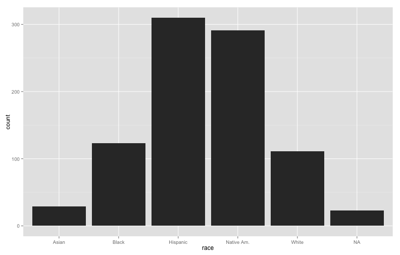
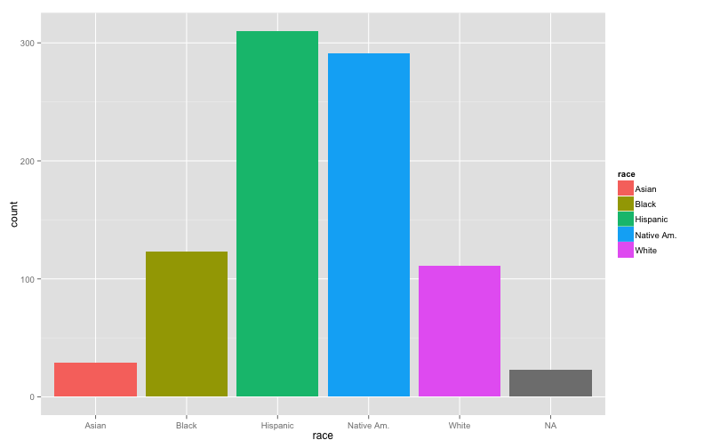
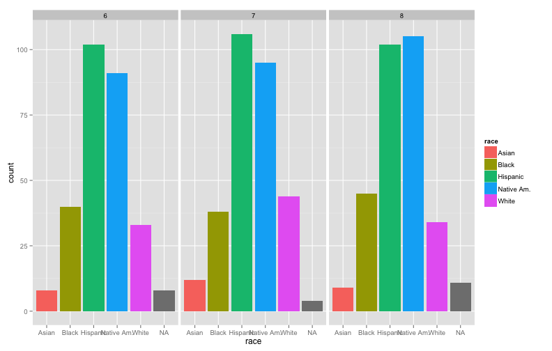
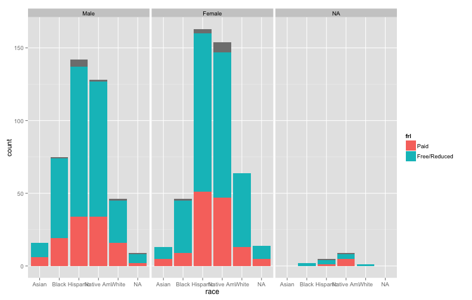
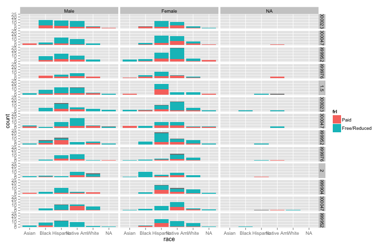
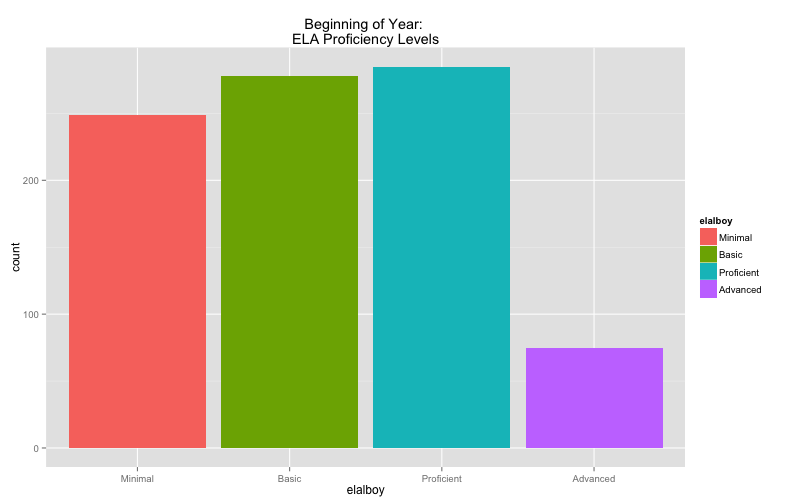
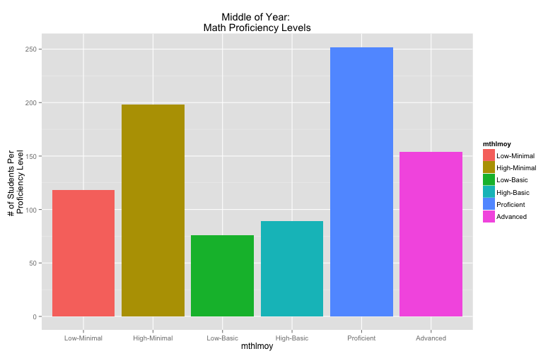
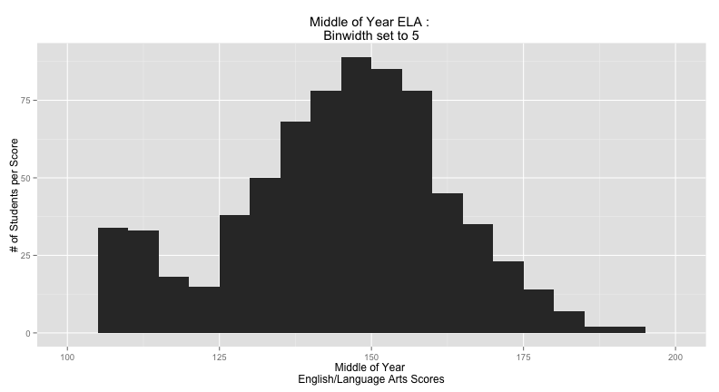
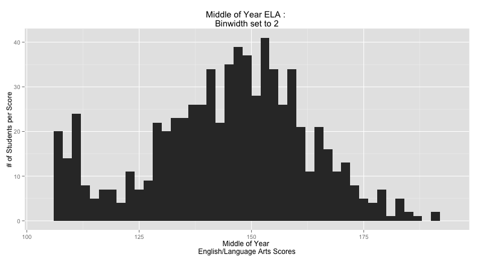
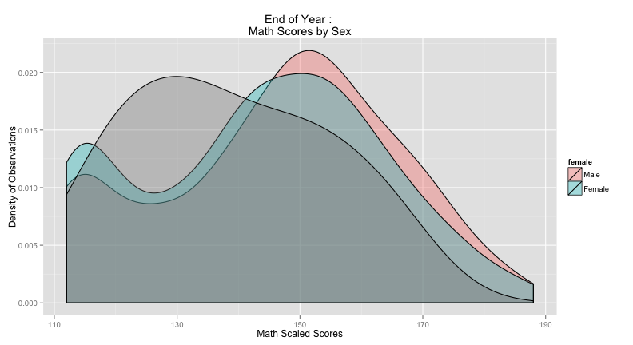

- Terminology:
- Computing
- R
- Statistics
- Measurement Scales:
- Categorical
- Continuous
- Univariate Visualization:
- Nominal Scale Data
- Ordinal Scale Data
- Intervallic/Ratio Scale Data
Intro to Terminology, Measurement Scales, and Univariate Visualization
Getting started in R and Stats
William R. Buchanan, Ph.D.
Strategic Data Fellow at MDE/Adjunct Prof at JSU
Overview
Terminology for Computing
- A file path is the location where a specific file is stored on your computer
- On Windows, the file path to a file on your desktop might look something like "C:\Users\Your Username\Desktop\thefile.txt"
- It's a good idea to change "\" to "/"
- Then the file path above would look like: "C:/Users/Your Username/Desktop/thefile.txt"
- On *nix based systems (Mac, Linux, Unix) it would probably look like: "/Users/Your Username/Desktop/thefile.txt" but you can use a short cut to fill-in everything up to your username "~/Desktop/thefile.txt"
Terminology for Computing (continued)
- If you don't know/remember where a file is located, you can right click on the file, and select "Properties" (for Windows users) or "Get Info" (for Mac users)
- The look for "Location" (Windows) or "Where" (Mac) to find the file path
- Remember to add the file name after the file path
Terminology in R
Heads Up
- R interprets what you type literally. Literally.
- If you see quotation marks, spaces, or anything else in the examples I give you, make sure to include them
- If you have difficulty with any of the examples there is information that you need to provide in order for someone else to help:
- Exactly what it was that you typed
- Exactly what it was that R displayed as an error message
- A short explanation of what you're trying to do
- I will show you a bit about R Markdown so you are able to do all of your work in a single place as the semester moves on
Terminology in R
- Everything in R is an object
- For the purpose of our class think of an object as a storage container
- Load the diamonds example dataset
data(diamonds) - We can store the average price in an object like this:
avgDiamondPrice <- mean(diamonds$price) - avgDiamondPrice is the object and we put the average price of the diamonds inside of it
- <- is called the assignment operator (it points to the place you are going to store something)
- mean(diamonds$price) is what we want to store in our object
- If you want to see what you stored in the object you can use either
print(avgDiamondPrice)or just type in the name of the objectavgDiamondPrice
- Load the diamonds example dataset
- You should give your objects a name that is easy to remember and describes what they contain
Terminology in R (continued)
- Functions do things with objects
- In the previous slide we used the
mean()function to get the average price of diamonds in the diamonds data set - We use functions to answer "What" and/or "How many" questions
- To use a function a computer needs us to tell it "How"; thankfully, all of the answers to these "How" questions have previously been answered by the folks who did all of the programming
Terminology in R (continued)
- Functions all have a similar structure: function(x, y, z, etc...)
- in the bullet above function is the name of the function
- x, y, z, and etc... are called arguments
- arguments allow us (the end users) to provide values (pass parameters) to the underlying function
- the
mean()function, has an argument 'na.rm' which takes two possible values 'TRUE' or 'FALSE' to tell the function whether or not it needs to remove missing values
- You'll only need to be familiar with a handful of functions to do any/all of the work in this course, and would only need to learn about another couple of functions for any subsequent stats courses
Terminology in R General Info
- When you're working in the R console you should see the '>' character at the start of the line
- If you see the '+' character it means that you have not completed the line
- Check to make sure that all '(' have a corresponding ')' and that all ' " ' have a corresponding ' " ' any bracket/quotation marks that are not balanced (e.g., occur in pairs) will cause that to happen
- If it does happen you can try the escape key or balancing things from the point where it became unbalanced
- Like all programming languages, there are characters that you can use to add comments or to continue and keep in on shorter length lines
Terminology in R General Info (cont.)
# This is a comment that will let you read/type info for you with out
# having to worry about R complaining about it
This is not a comment and will cause an error
# Sometimes you may want to split lines up to make things easier to read
someDataFromAWebSiteOnTheWeb <- as.data.frame( #
read.dta( # You can add comments here as well if you'd like
"http://www.paces-consulting.org/mde/data-wrkshp4-843.dta") #
)
Terminology for Statistics
- Variable - What we want to measure (e.g., demographics, assessment scores, behavioral measures, etc...)
- If you need to visualize a variable, think of columns in a spreadsheet/grade book
- Observation - Who we are measuring (e.g., students, teachers, schools, etc...)
- For this course you can almost always think of this as students
- If you need to visualize it, think of observations as the rows in a spreadsheet
| ID | Sex | MathScore | ReadingScore | <- Each Column Contains a single Variable |
|---|---|---|---|---|
| 1 | 1 | 137 | 122 | <- This row is an observation |
| 2 | 0 | 124 | 120 | <- This row is a different observation |
Terminology for Statistics (cont.)
- Descriptive Statistics - statistical methods/algorithms that we use to summarize what our sample data look like (e.g., frequencies, percentages/proportions, means, medians, minimums, maximums, etc...)
- This is like saying that you know you have about 52% of the students in your class that are females
- Inferrential Statistics - statistical methods/algorithms that we use to generalize our findings/understanding/predicitions to the population
- When you see a poll on the news and they say X% of people believe Y, this is a case where they've taken the data they had available and are generalizing it to the population
- Estimates - everything in statistics is an estimate.
- There is no certainty and statistics cannot conclusively "prove" anything.
- If our estimates are good, then we can be reasonably assured that it will be the case the overwhelming majority of the time
- REMEMBER : Statistics CANNOT, nor will it ever be able to, PROVE ANYTHING!
Terminology for Statistics (cont.)
- Population - All of the observations that we would be interested in
- We make predictions about the population by using inferential statistics
- Sample - A group of observations from the population of interest
- Your classroom could provide a sample of students from that particular grade level/subject area
- We use descriptive statistics to illustrate the data we have on hand
- Our sample is used to estimate our predictions about the population
- Sample = what we have to work with and can collect; Population = what we want to make predictions about
Measurement Scales
- When we collect data we need to know how those data were measured (e.g., was weight measured in ounces, pounds, or kilograms)
- Measurement scales in statistics not only tell us how the values for a variable were measured, but also tell us about the number properties of the variable
- There are two scales for categories and two scales for "continuous" measures
Categorical Measurement Scales
Nominal
- Nominal scales are used to measure unordered categories (e.g., categories where each of the groups are defined to be equivalent)
- For example, we could have a variable called "make" that would contain the make of different cars: 1 = Toyota, 2 = Nissan, 3 = Volvo, 4 = BMW, 5 = Ford, 6 = Benz, 7 = Chevy, etc...
- If we were to change all of the numeric values above: 7 = Toyota, 3 = Nissan, 2 = Volvo, 6 = BMW, 5 = Ford, 4 = Benz, 1 = Chevy, etc... it wouldn't matter because the numbers only serve to identify the make of the car
- Because the values only serve to identify the category you CANNOT do any type of arithmetic operations with them
Categorical Measurement Scales
Ordinal
- Ordinal scales are used to measure categories where the numbers represent an order of magnitude (e.g., lower value numbers are < higher value numbers)
- If you've taken a survey that asked you to select a response from Strongly Disagree, Disagree, Neither Agree nor Disagree, Agree, or Strongly Agree you've already experienced ordinal scale variables first hand
- In the case above the variable is measuring how much you agree with something and Strongly Disagree (1) < Disagree (2) < Neither Agree nor Disagree (3) < Agree (4) < Strongly Agree (5)
- Although these values have an order, you still can't use the values for basic aritmetic operations (e.g., would (1) Strongly Disagree + (2) Disagree make sense to you?)
Continuous Measurement Scales
Intervallic
- Intervallic scales do not include a true zero or do not include zero at all
- If we measured the weight of everyone in the room no one here would have zero weight, so the measurement scale wouldn't include a zero
- If we took all of those weights and standardized them (subtracted the average weight from everyone and then divided it by the standard deviation of weight) we would get a zero value, but it wouldn't be a true zero (e.g., that zero value would mean the average weight and not a complete lack of weight)
- Here it is possible to use arithmetic operations on the values
- Most test scores use either ordinal or intervallic measurement scales
Continuous Measurement Scales
Ratio
- Ratio scales include a true zero and all arithmetic operations can be used with them
- If we asked everyone how many quarters they had in their right front pants pocket, we would probably get a few people who have 0 quarters in their right front pants pocket
- In this case, we have a true zero because the zero means a complete lack of
Univariate Data Visualization
- The first, and always most important, step is to get some data.
- Use the code below to load some data, but choose your own object name to get a better feel for using R
# Need the foriegn package to use sample data
library("foreign")
# Download/load the sample data from my server
myData <- as.data.frame(read.dta( #
"http://www.paces-consulting.org/mde/data-wrkshp4-843.dta"))
Univariate Data Visualization (continued)
- Now you need to know what variables you have:
names(myData) - These samples have a few different types of data in them:
- ID variables (schid, tchid, msis)
- Demographics (grade, female, frl, homeless, etc...)
- Assessment (Beginning, Middle, & End of Year, etc...)
- Behavioral (absences, detention, suspensions, etc...)
- Use
summary(myData)to get a quick idea about how the different variables are distributed
Univariate Data Visualization (continued)
- We'll create some graphs of the demographics first
# Load the graph package we installed last week
library("ggplot2")
# If you didn't install this package use this code to install it
install.packages("ggplot2", dep = TRUE)
# Then you can load the graph package
library("ggplot2")
Graphing Nominal Data
qplot(race, data = myData)

qplot(race, fill = race, data = myData)

qplot(race, fill = race, facets = . ~ grade, data = myData)

qplot(race, fill = race, facets = . ~ female, data = myData)

qplot(race, fill = race, facets = . ~ homeless, data = myData)

qplot(race, fill = race, facets = . ~ lep, data = myData)

qplot(race, fill = race, facets = . ~ sped, data = myData)

qplot(race, fill = race, facets = . ~ frl, data = myData)

qplot(race, fill = frl, facets = . ~ female, data = myData)

qplot(race, fill = frl, facets = tchid ~ female, data = myData)

Graphing Ordinal Data
- The only difference between nominal and ordinal data, is that you would want to avoid using pie graphs for ordinal data at all costs
- A good graph for Ordinal data will also show the order of the values (e.g., as you move to the right on the x-axis the values should represent the increasing amounts)
qplot(elalboy, fill = elalboy, data = myData, #
main = "Beginning of Year: \nELA Proficiency Levels")

qplot(mthlmoy, fill = mthlmoy, data = myData, #
main = "Middle of Year: \nMath Proficiency Levels", #
ylab = "# of Students Per \nProficiency Level")

qplot(mthleoy, fill = mthleoy, facets = frl ~ ., #
data = myData, main = "End of Year: \nMath Proficiency Levels", #
ylab = "# of Students Per \nProficiency Level", #
xlab = "Split Proficiency Levels for MSAS Growth")

Graphing Intervallic/Ratio Data
- Now we no longer have nice and neat categories to use, and the questions that we want to answer are a bit different from when we were working with categorical data
- The most important thing we need to find out is the "shape" or "distribution" of the values (e.g., the # of observations at each value of the variable)
qplot(elamoy, data = myData, geom = "histogram", na.rm = TRUE, #
binwidth = 10, ylab = "# of Students per Score", #
main = "Middle of Year ELA : \nBinwidth set to 10", #
xlab = "Middle of Year \nEnglish/Language Arts Scores")

qplot(elamoy, data = myData, geom = "histogram", na.rm = TRUE, #
binwidth = 5, ylab = "# of Students per Score", #
main = "Middle of Year ELA : \nBinwidth set to 5", #
xlab = "Middle of Year \nEnglish/Language Arts Scores")

qplot(elamoy, data = myData, geom = "histogram", na.rm = TRUE, #
binwidth = 2, ylab = "# of Students per Score", #
main = "Middle of Year ELA : \nBinwidth set to 2", #
xlab = "Middle of Year \nEnglish/Language Arts Scores")

qplot(elamoy, data = myData, geom = "histogram", na.rm = TRUE, #
binwidth = 1, ylab = "# of Students per Score", #
main = "Middle of Year ELA : \nBinwidth set to 1", #
xlab = "Middle of Year \nEnglish/Language Arts Scores")

qplot(mtheoy, data = myData, geom = "density", #
na.rm = TRUE, main = "End of Year : \nMath Scores", #
xlab = "Math Scaled Scores", ylab = "Density of Observations")

qplot(mtheoy, fill = female, data = myData, geom = "density", #
na.rm = TRUE, main = "End of Year : \nMath Scores by Sex", #
xlab = "Math Scaled Scores", ylab = "Density of Observations")

qplot(mtheoy, fill = female, alpha = I(0.35), data = myData, #
geom = "density", na.rm = TRUE, #
main = "End of Year : \nMath Scores by Sex", #
xlab = "Math Scaled Scores", ylab = "Density of Observations")

qplot(mtheoy, fill = female, alpha = I(0.35), facets = frl ~ ., #
data = myData, geom = "density", na.rm = TRUE, #
main = "End of Year : \nScores by Sex and Free/Reduced Lunch", #
xlab = "Math Scaled Scores", ylab = "Density of Observations")

Additional Resources for Learning R
- From the UCLA Statistics Consulting Group
- From an R Example website
- Resources Recommended by a Highly Respected Statistician
Additional Resources for Learning R (cont.)
- From Princeton's Statistics Consultants
- R Videos from U Colorado Denver
- Websites used by the R-user Community
- The Website for the Graphics Package We'll be Using
Next Class
- Now that you have an idea of how to create some of these graphs, we will focus a lot more time on interpretation next week as well as other univariate graphing methods
- You should be able to do everything on the slides without a problem if you cut/paste things, but try using them more like a guide (remember the variable names will be the same, but you can always change the name of the data object)
- If you have/find data that you want to be used in the course (must be something publicly available), let me know and we can work with that as well